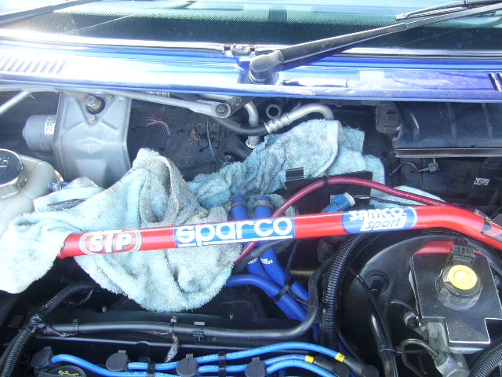
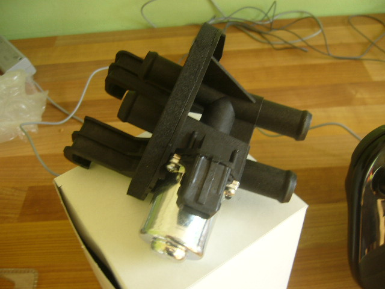
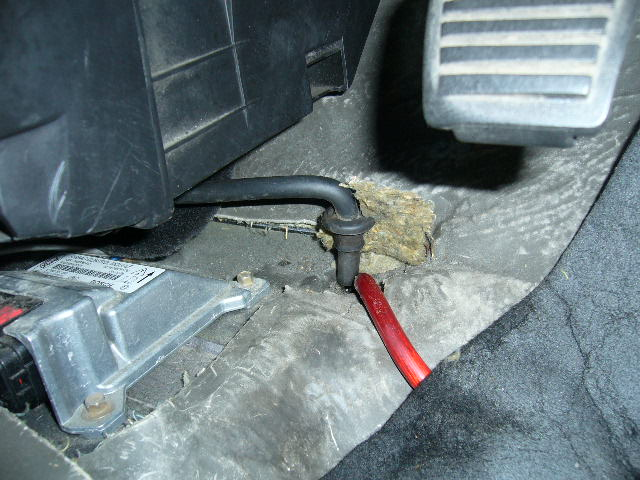

On the 200 mile journey back from Rainham, I turned the heater dial and it went to full hot!!
Nothing would change it.....
I put a test light on the signal to the heater control valve in the middle of the firewall (below windscreen) and it had a regular pulsing that changed frequency depending on the temp setting (pulse width modulated), which meant the actual valve had stuck - probably full of antifreeze. Which it was.
Old one removed and new one fitted....
 
Popped the car over to Halfords in Drakehouse for an AC service.
35 mins later and the temp at the face vents is 4 degrees! lower than most new cars.
Later that day, there was water dripping from the heater box onto the carpet - no doubt due to condensation from the AC. But there should be a drain for that. And here it is...

The power wire from the stereo has been pushed through the hole, trapping and blocking the drain tube for the AC! Red wire removed and drain tube blown through and reinserted. Should be okay now.
There was a blue power wire coming from the battery down the passenger side of the car, so I connected that up to power the cap and amp.
Click here for future plans